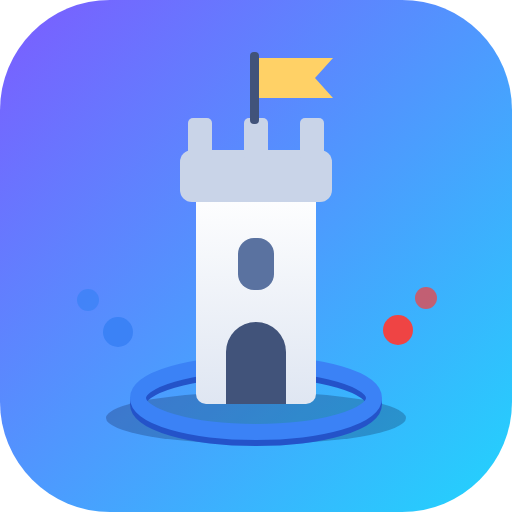
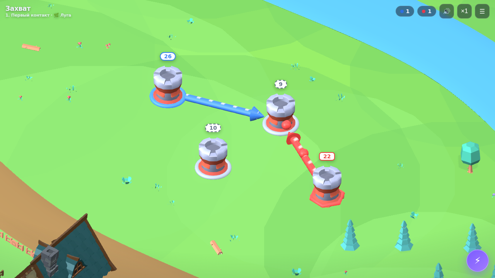
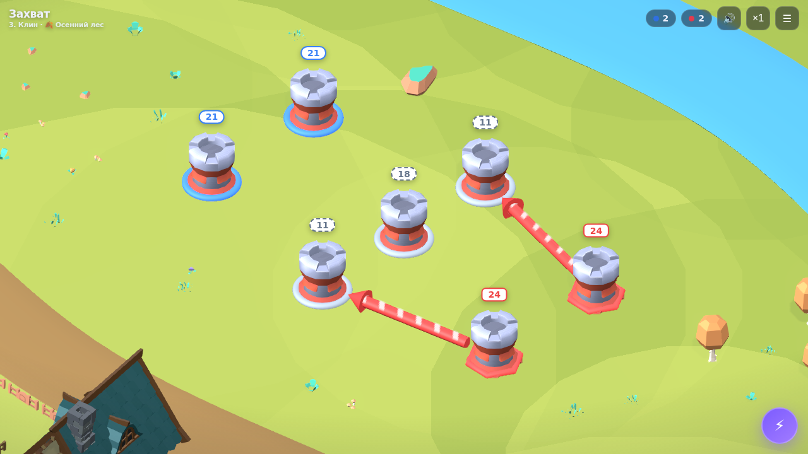
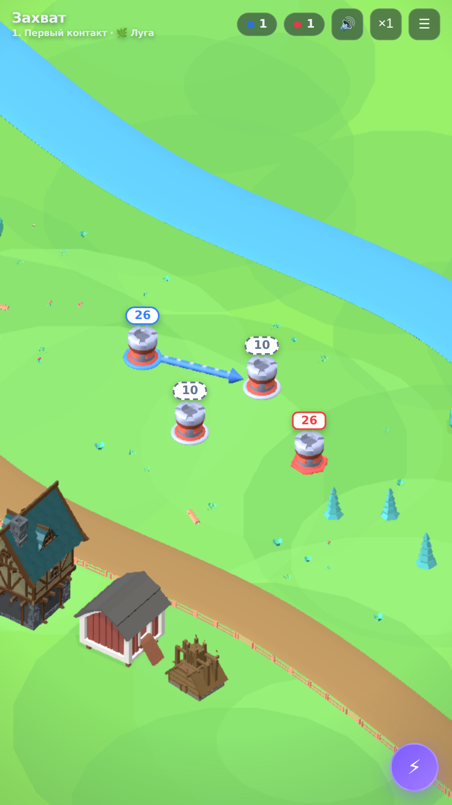

Игры — публикация на площадках
Готовые тексты анкет, ассеты и чеклисты: Яндекс Игры · VK · RuStore. Все три игры технически подготовлены: ресурсы локально, SDK Яндекса встроен. Сначала — «Захват», ниже — «Считаем с Роботом» и «Скажи-Покажи».
✅ Что уже готово в коде
- Все ресурсы локально — three.js лежит в
/vendor/, внешних запросов ноль (требование Яндекс Игр).
- SDK Яндекс Игр встроен: инициализация, сигнал готовности (LoadingAPI.ready), старт/стоп геймплея (GameplayAPI). На своём сайте SDK просто не находится и игра работает как обычно.
- Кнопка «Поделиться» с внешней ссылкой автоматически скрывается внутри Яндекс Игр (внешние ссылки там запрещены).
- Политика конфиденциальности: lanashakh.github.io/privacy/
- Иконка и скриншоты — ниже, в папке
/igra-zahvat/store/assets/.
- Готовый архив для Яндекса: zahvat-yandex.zip (~1,4 МБ). После изменений игры пересобери: в папке igra-zahvat команда
zip -r store/assets/zahvat-yandex.zip index.html models vendor.




📝 Тексты для анкет (копируй как есть)
Название
Захват
Короткое описание (до ~80 знаков)
Тяни линии, качай башни и захвати всю карту за минуту. А потом ещё разок!
Полное описание
Захват — затягивающая мини-стратегия о контроле территории.
Тяни связь от своей башни: к нейтральной или вражеской — чтобы атаковать и захватить, к своей — чтобы перекачать войска и прокачать её. Башни растут сами, пока не воюют, а с уровнем держат больше связей. Побеждай бота, который умеет и атаковать, и защищаться.
• Специализации башен: атака, защита или экономика — реши, кем станет каждая
• 6 карт-миров: луга, осенний лес, сосновый бор, густая чаща и другие
• Бесконечный режим: карты генерируются, сложность растёт, рекорд сохраняется
• Герой-комендант Филин: прокачка за звёзды и активная способность «Рывок»
• Звёзды за скорость прохождения — есть за чем возвращаться
• Партия занимает 1–3 минуты: идеально «на ещё разок»
• Играется одной рукой, на телефоне и на компьютере
Параметры анкеты
- Жанр/категория: Стратегия (доп.: казуальные, аркады)
- Теги: стратегия, захват территорий, башни, таймкиллер, офлайн
- Возраст: 0+ (мультяшное, без реалистичного насилия; если в анкете нет 0+, выбирай минимальный)
- Ориентация: любая (портрет и ландшафт) · Управление: тач и мышь
- Языки: русский · Интернет: не требуется
- Политика конфиденциальности: https://lanashakh.github.io/privacy/
🟡 Яндекс Игры — начни отсюда (проще всего)
- Зайди в Консоль Яндекс Игр (games.yandex.ru → «Разработчикам») под своим Яндекс-аккаунтом.
- «Добавить игру» → загрузи zahvat-yandex.zip.
- Заполни анкету текстами выше, загрузи
icon-512.png и 3–5 скриншотов (ландшафтные + портретные из assets).
- Пройди автопроверку в черновике (SDK уже встроен — пункты про ready/геймплей должны загореться зелёным) и отправь на модерацию.
- После одобрения игра получает страницу в каталоге. Монетизация (реклама RSY) подключается отдельно в консоли — там и пригодится самозанятость: укажи её в платёжных данных, выплаты идут на счёт, чек пробиваешь в «Мой налог».
- Таблица рекордов: в консоли создай лидерборд с техническим именем
endless («больше — лучше») — игра сама отправляет туда рекорд бесконечного режима. Облачные сейвы уже работают из коробки.
🔵 VK (Mini Apps / VK Play)
- Игры ВК живут как мини-приложения: создаётся приложение в кабинете dev.vk.com, тип «Игра», игра крутится в iframe.
- Технически осталось: встроить vk-bridge (их SDK) — аналог того, что уже сделано для Яндекса. Скажи мне — добавлю тем же способом (без VK окружения он просто не активируется).
- Хостинг: можно указать свой URL (lanashakh.github.io) или залить статику на их хостинг.
- Анкета: те же тексты и ассеты.
🟣 RuStore
- RuStore принимает Android-приложения (APK/AAB), а не HTML-игры — нужно обернуть игру в приложение (WebView/TWA). Это отдельный шаг: скажи — соберу обёртку.
- Аккаунт разработчика RuStore оформляется в том числе на самозанятого (понадобится ИНН).
- Обязательны: политика конфиденциальности (готова ✅), возрастная маркировка (0+), иконка и скриншоты (готовы ✅).
🤖 «Считаем с Роботом» — анкета и ассеты
SDK Яндекса встроен ✅ · шрифт локально ✅ · архив: robot-yandex.zip · иконка и скриншоты: icon-512, shot-1, shot-2
Короткое описание
Учимся складывать и вычитать с добрым роботом: голос, награды и приключение!
Полное описание
Считаем с Роботом — тренажёр счёта для детей 4–8 лет.
Робот голосом читает примеры, хвалит за ответы и мягко помогает при ошибках. Сложность растёт сама: от 2+1 до примеров в пределах 100 — ребёнок всегда на своём уровне.
• Озвучка живым голосом: примеры, похвала, подсказки
• Выбор ответа или ввод с клавиатуры — как удобнее
• Награды: звёзды, серия правильных ответов, пауэр-апы
• Робот-пазл: собери своего робота из заработанных деталей
• Магазин: маскоты, темы оформления, мини-игры «Больше-меньше» и «Лесенка»
• История в комиксах и ежедневная цель с подарком
• Работает без интернета, прогресс сохраняется
- Категория: Обучающие / Детские · Возраст: 0+ · Ориентация: портрет
- После правок игры пересобери архив: в папке igra-robot команда
zip -r store/assets/robot-yandex.zip index.html voices_pack fonts
🗣️ «Скажи-Покажи» — анкета и ассеты
SDK Яндекса встроен ✅ · всё локально ✅ · архив: skazhi-yandex.zip · иконка и скриншоты: icon-512, shot-1, shot-2, shot-3
Короткое описание
Карточки с озвучкой для развития речи малыша: покажи, назови, общайся.
Полное описание
Скажи-Покажи — развивающие карточки с озвучкой для запуска и развития речи.
Ребёнок слушает слово и находит картинку, повторяет за образцом (целиком или по слогам) и учится общаться через доску с карточками. Умное повторение само возвращает трудные слова чаще.
• «Покажи»: слушаем слово — находим картинку
• «Назови»: образец, произношение по слогам, запись голоса ребёнка
• Доска общения: собери фразу из карточек — приложение её озвучит
• Визуальное расписание: составляем и выполняем план дня
• Свои карточки: фото и голос родителя — знакомые лица и предметы
• Прогресс для родителя: что освоено, что в работе
• Полностью офлайн: фото и записи не покидают устройство
- Категория: Обучающие / Детские · Возраст: 0+ · Ориентация: портрет
- Примечание для модерации: запись голоса — по явному нажатию родителя/ребёнка, аудио хранится только на устройстве (см. политику).
- После правок пересобери архив: в папке skazhi-pokazhi команда
zip -r store/assets/skazhi-yandex.zip index.html voices_pack
👩💻 Что нужно сделать руками (я не могу за тебя)
- Зарегистрировать самозанятость в приложении «Мой налог» (10 минут, нужен только паспорт/ИНН).
- Завести аккаунты: Консоль Яндекс Игр, dev.vk.com, консоль RuStore.
- В платёжных настройках площадок указать статус самозанятого и реквизиты счёта.
- После каждой выплаты — чек в «Мой налог» (налог 6% с выплат от юрлиц).
⚠️ Это практический гайд, а не юридическая/налоговая консультация. Формы анкет и требования площадки иногда меняют — сверяйся с их актуальной документацией при подаче.
{kind=link}
{kind=link}
{kind=link}
{kind=link}
{kind=link}
{kind=link}
{kind=link}